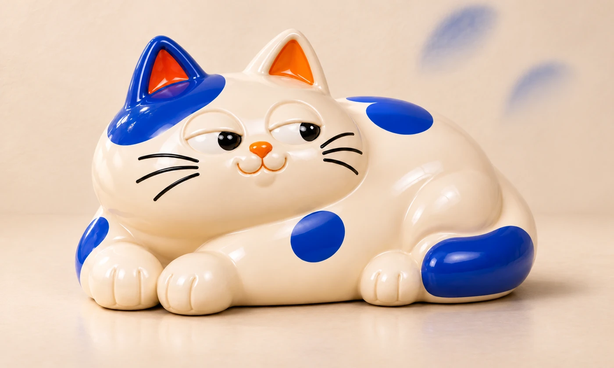
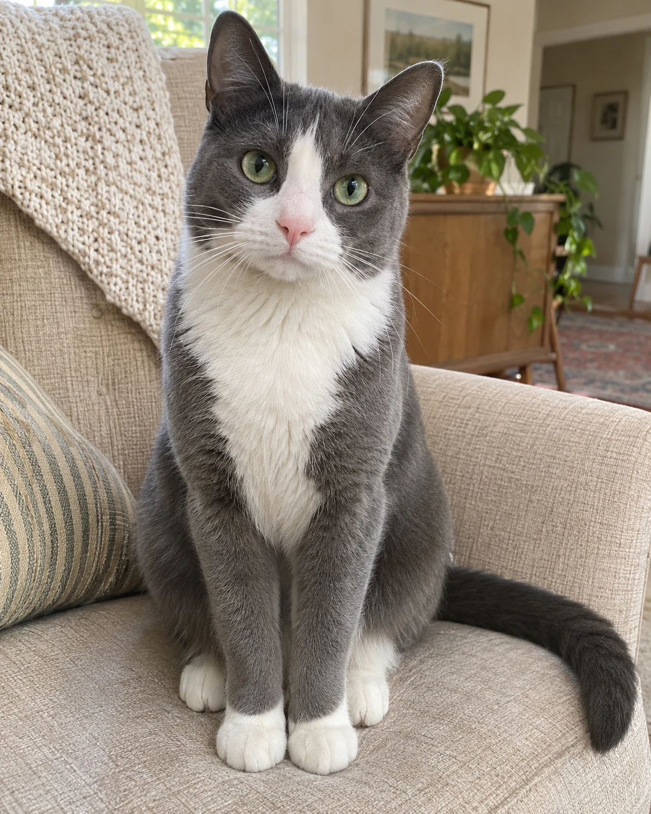
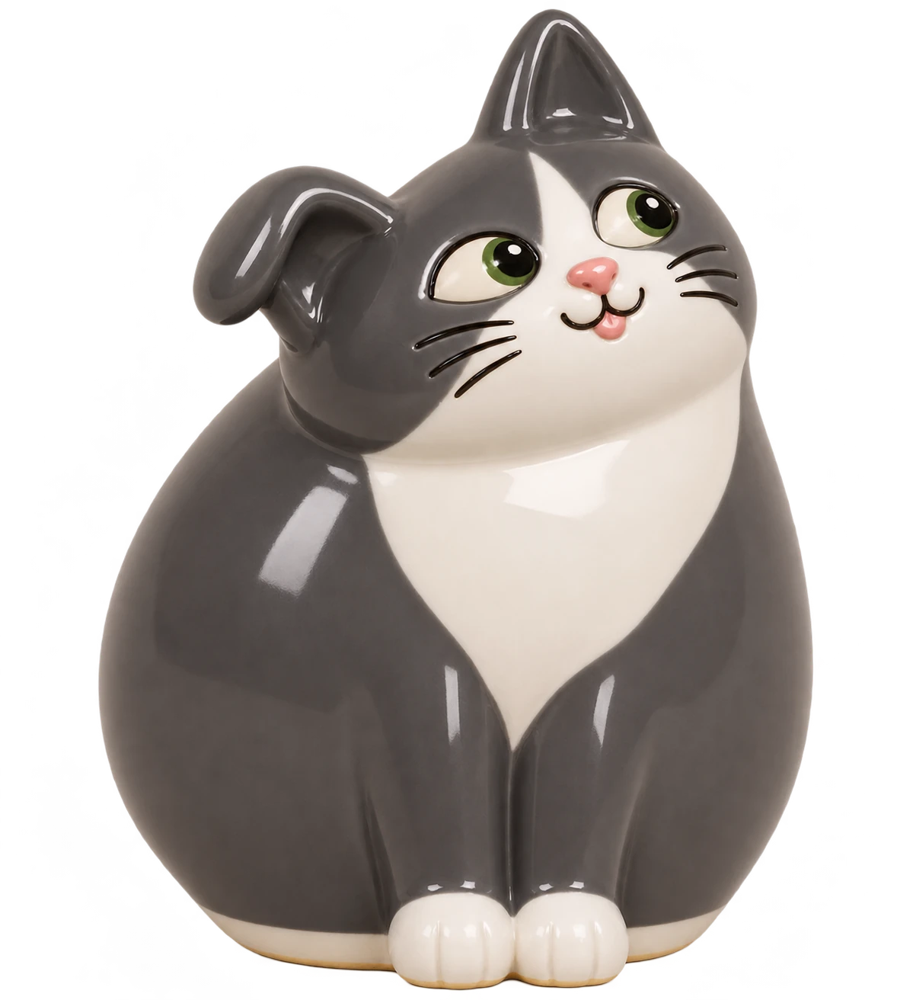
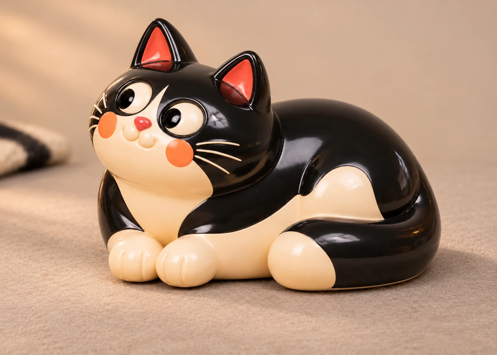
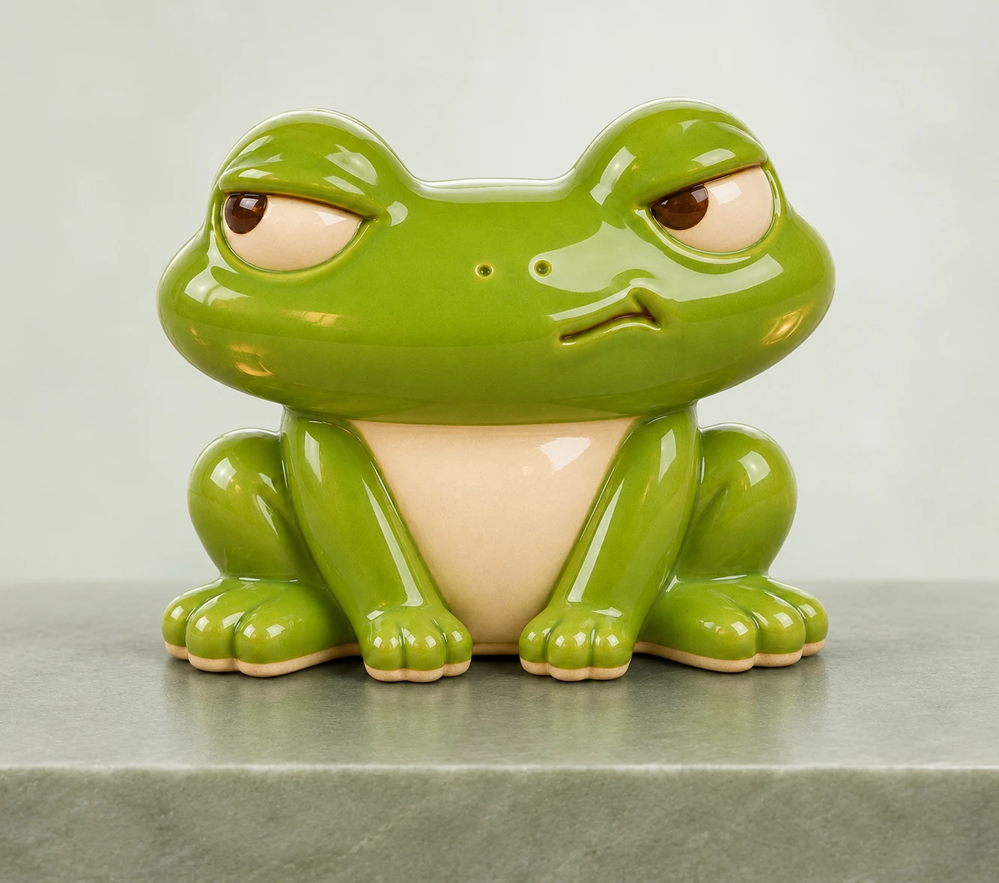
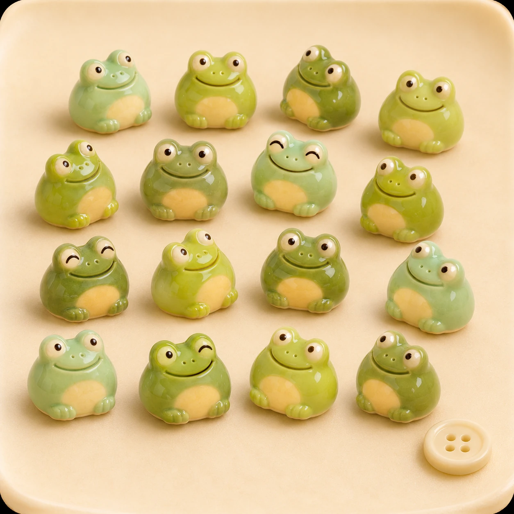

Белый кот
от 1 900 ₽
Лежащий кот с кобальтовыми пятнами.
Выберите котика из коллекции или пришлите фото своего —
его окрас и приметы станут частью керамической фигурки.
Из глины,
с характером
Один такой
Любимое пятнышко на носу, белые носочки, полосатый хвост. Сохраним приметы вашего кота на одной из наших керамических форм.
от 3 200 ₽ за фигурку с индивидуальным окрасом
Посмотреть формы котиков ↗

У каждого свои привычки.
Почти как у настоящих.

от 1 900 ₽
Лежащий кот с кобальтовыми пятнами.

от 1 800 ₽
Чёрный кот с белой грудкой и загнутым ушком.

от 1 800 ₽
Зелёный кот, который никуда не спешит.

от 2 000 ₽
Полосатый кот с круглыми лапками и высунутым языком.

от 1 900 ₽
Чёрно-белый кот с длинным хвостом.

от 2 600 ₽
Сиреневый кот, корзинка и клубок — одна фигурка.
Круглые и довольные жизнью. А кувшинка ещё и хранит ваши колечки.

от 1 500 ₽
Круглая зелёная жабка с улыбкой до ушей.

от 1 600 ₽
Широкая мордочка и очень серьёзный взгляд.

от 2 400 ₽
Фигурка и небольшое блюдце для колец.

от 300 ₽ / шт.
Совсем крошечные. По одной или целой компанией.
Любимые герои.
Теперь из глины.

от 2 200 ₽
Бирюзовый непоседа с загнутым ухом.

от 2 200 ₽
Малиновые щёки, сливовые иголки и круглые очки.

от 2 400 ₽
Сиреневые кудряшки и задумчивая мордочка.

от 2 400 ₽
Розовая фигурка с косичкой и ромашкой.
Цены ориентировочные. Приём заказов пока закрыт.
О мастерской
Я Ася, придумала «Тихую глину» для небольших вещей, к которым быстро привязываешься. Леплю фигурки вручную, расписываю и покрываю глазурью.
Мне нравятся смешные позы, круглые лапы и разные мордочки. Котик может быть похож на вашего питомца, жабка — на ваше настроение.
○ Приём заказов пока закрыт